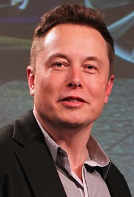

Musk was born on June 28, 1971, in Pretoria, Transvaal, South Africa, the son
of Maye (née Haldeman), a model and dietician from Regina, Saskatchewan,
Canada;and Errol Musk, a South African-born electromechanical engineer. He has a
younger brother, Kimbal (born 1972), and a younger sister, Tosca (born 1974).
His paternal grandmother was British, and he also has Pennsylvania Dutch
ancestry. After his parents divorced in 1980, Musk lived mostly with his father
in locations in South Africa.
At age 10, he developed an interest in computing with the Commodore VIC-20.He
taught himself computer programming and at age 12, sold the code for a
BASIC-based video game he created called Blastar to a magazine called PC and
Office Technology for approximately US$500. A web version of the game is
available online.
Musk was severely bullied throughout his childhood, and was once hospitalized
when a group of boys threw him down a flight of stairs and then beat him until
he lost consciousness.
Musk was initially educated at private schools, attending the English-speaking
Waterkloof House Preparatory School. Musk later graduated from Pretoria Boys
High School and moved to Canada in June 1989, just before his 18th birthday,
after obtaining Canadian citizenship through his Canadian-born mother.
At the age of 19, Musk was accepted into Queen's University in Kingston,
Ontario, for undergraduate study. In 1992, after spending two years at Queen's
University, Musk transferred to the University of Pennsylvania, where, at the
age of 24, he received a Bachelor of Science degree in physics from its College
of Arts and Sciences, and a Bachelor of Science degree in economics from its
Wharton School of Business.
Musk extended his studies for one year to finish the
second bachelor's degree. While at the University of Pennsylvania, Musk and
fellow Penn student Adeo Ressi rented a 10-bedroom fraternity house, using it as
an unofficial nightclub.
In 1995, at age 24, Musk moved to California to begin a PhD in applied physics
and materials science at Stanford University, but left the program after two
days to pursue his entrepreneurial aspirations in the areas of the Internet,
renewable energy and outer space. In 2002, he became a U.S. citizen.
In 1995, Musk and his brother, Kimbal, started Zip2, a web software company,
with US$28,000 of their father's (Errol Musk) money. The company developed and
marketed an Internet "city guide" for the newspaper publishing industry.
Musk
obtained contracts with The New York Times and the Chicago Tribune and persuaded
the board of directors to abandon plans for a merger with CitySearch While at
Zip2, Musk wanted to become CEO; however, none of the board members would allow
it. Compaq acquired Zip2 for US$307 million in cash and US$34 million in stock
options in February 1999. Musk received 7% or US$22 million from the sale